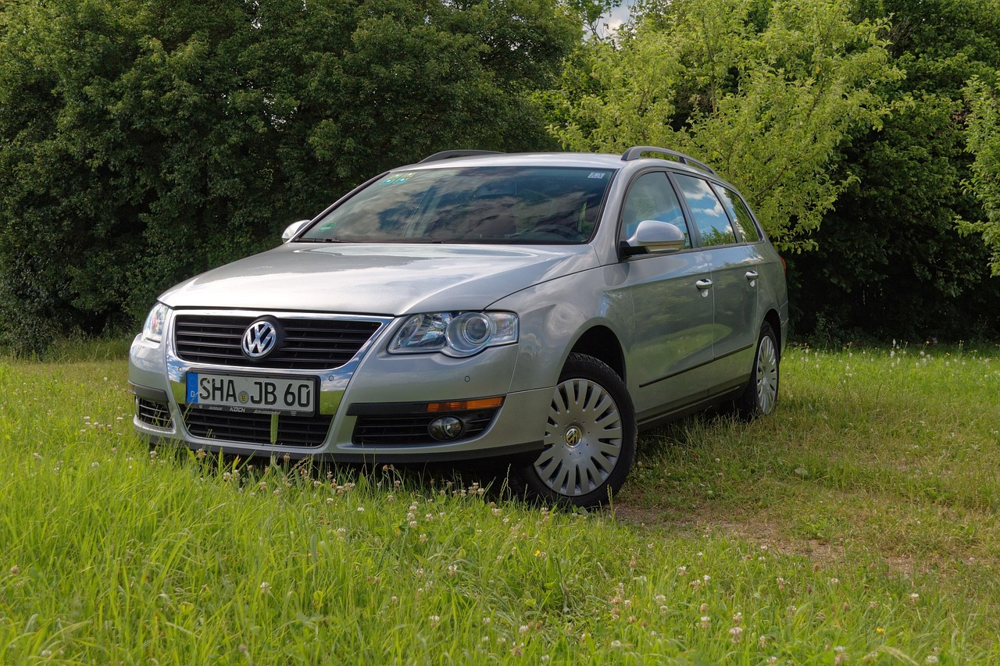

legendární motor 1.9tdi
využití
Tento věhlasný motor byl použit u mnohých modelů značky Volkswagen, Audi nebo naší české značky Škoda. Jsou to modely jako Octavia, Fabia, Superb, Passat, Golf nebo například Transporter. Často býval lehce upravován ale úpravy měly převážně co dočinění jenom s převody jinaky motor samotný se nijak závažně neměnil.
